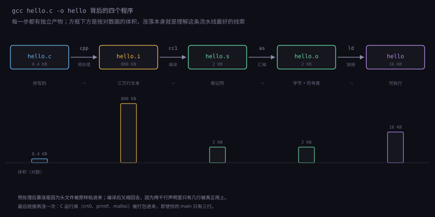
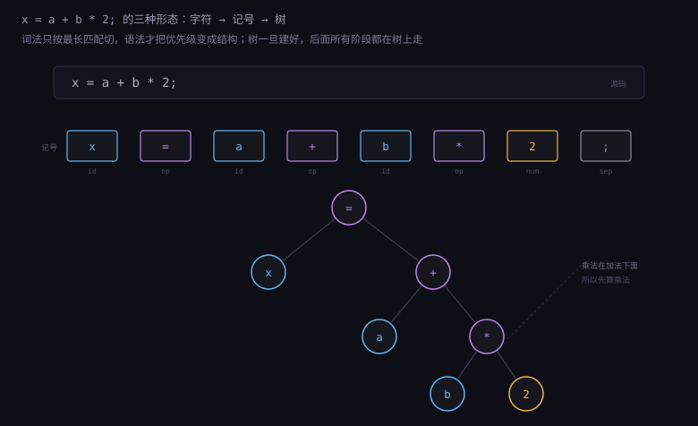
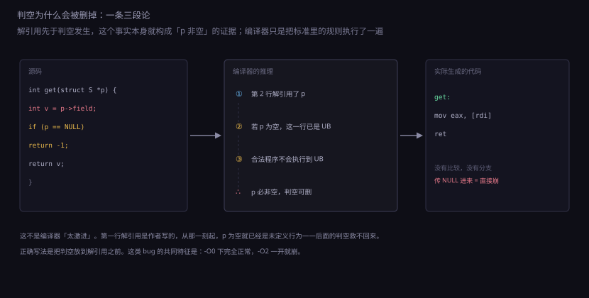
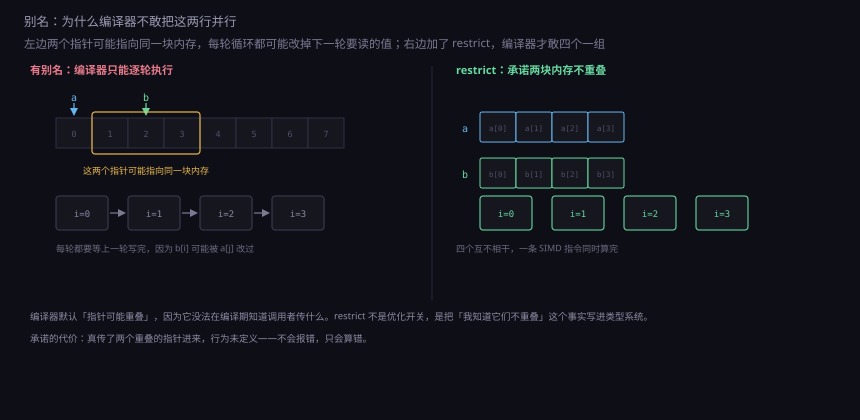
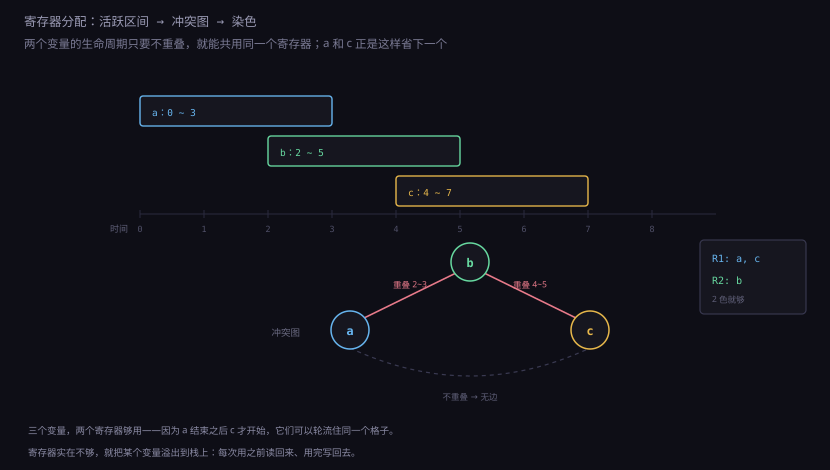

约 1.0 万字 · 5 张图 · 读完你能说清 gcc hello.c -o hello 这一条命令里
藏了哪四个程序，明白优化器凭什么敢删掉你写的循环，
以及「未定义行为」为什么不是一句免责声明，而是编译器手里的一张空白支票
先看一条最普通的命令：
gcc hello.c -o hello它看起来像是一个程序在做一件事。实际上是四个程序接力：
| 阶段 | 程序 | 输入 → 输出 | 干什么 |
|---|---|---|---|
| 预处理 | cpp | .c → .i | 展开宏、插入头文件、处理条件编译 |
| 编译 | cc1 | .i → .s | 语法分析、类型检查、优化、生成汇编 |
| 汇编 | as | .s → .o | 把助记符编码成字节，生成重定位表 |
| 链接 | ld | .o + 库 → 可执行文件 | 拼段、解析符号、填地址 |
gcc 本身只是个驱动程序（driver）：它按顺序调用这四个程序，
传对应的参数，删中间文件。-v 能看到它实际执行了什么：
gcc -v hello.c -o hello 2>&1 | grep -E 'cc1|as |collect2'这四个阶段可以单独走。考试和排查问题都用得上：
gcc -E hello.c -o hello.i # 预处理
gcc -S hello.i -o hello.s # 编译
gcc -c hello.s -o hello.o # 汇编
gcc hello.o -o hello # 链接
分开跑最大的价值是定位错误发生在哪一步。
头文件找不到是预处理阶段的问题；
语法错、类型警告是编译阶段；
符号重定义是链接阶段。
报错信息里那些 In file included from...、
undefined reference to... 的差别，就是不同阶段在说话。

hello.c 二十行，预处理后变成几千行（头文件全都塞进来了），编译后又缩回几百字节的汇编，最后链接出来的可执行文件又涨到几万字节——因为运行库被拼了进去。体积的涨落本身就是理解这条流水线的线索。
很多人以为 #include 是「导入模块」。
不是。预处理器做的事情极其粗暴：把那个文件的内容原样复制过来，
从 #include 那一行开始粘贴。
一个 #include <stdio.h> 展开后是两千多行，
里面还套着十几个别的头文件。
用 gcc -E 看一眼就知道有多粗暴。一个二十行的 hello.c，
预处理后通常有三万行以上，其中 99.9% 你都用不到。
这也是 C 编译慢的第一个原因——不是编译慢，是每次都要重新搬运一遍。
预处理器的全部能力就三样：
| 指令 | 做什么 | 代价 |
|---|---|---|
#include | 把文件内容粘过来 | 重复展开，编译时间线性增长 |
#define | 文本替换，不认类型也不认作用域 | 没有类型检查，宏参数被求值两次 |
#if / #ifdef | 按条件保留或丢弃整段文本 | 同一份代码在不同宏组合下是不同程序 |
#define 的坑值得单独说一个，因为它能说明「文本替换」和「函数调用」的区别有多大：
#define SQUARE(x) ((x) * (x))
int a = SQUARE(3); // 9，没问题
int b = SQUARE(i++); // i 自增两次
int c = SQUARE(f()); // f() 被调用两次
这三个括号是必需的（((x) * (x))），但即使加了括号，
参数被求值两次这件事也躲不掉——因为预处理器只是把 x
换成 i++，替换后的文本就是 ((i++) * (i++))。
这不是编译器不聪明，是预处理器根本不知道「求值」是什么，它只认字符。
现代 C 里这类宏基本被 static inline 函数取代了：
有类型检查、参数只求值一次、调试时能看到栈。
宏真正还不可替代的地方是需要字符串化（#x）
或者拼接标识符（a##b）的场合，
这两种操作函数语法做不到。
#include 被骂了三十年。
因为它把「接口」和「实现细节」一起搬了进来：改一个私有成员，
所有包含这个头文件的文件都要重编。
模块（modules）想解决的就是这件事，但直到今天也没完全普及。
这是文本包含模型的固有代价，不是某个编译器的问题。
预处理完的文本还是纯字符。编译器第一步要把字符变成记号（token）： 关键字、标识符、字面量、运算符、分隔符。 这一步叫词法分析，做的事很像人读句子时先断词。
int x = a + b * 2 ;
↑ ↑ ↑ ↑ ↑ ↑ ↑ ↑
kw id = id + id * num ;
词法分析不看语法，只按最长匹配切。
所以 a+++++b 会被切成 a ++ ++ + b，
然后语法分析报错——切法本身没错，是这种写法本来就不合法。
这类「编译器报错位置很奇怪」的情况，多半出在这一层。
切完之后是语法分析。它按文法把记号组装成一棵语法树（AST）。 还是上面那行：
=
/ \
x +
/ \
a *
/ \
b 2
树的意义在于把优先级和结合性变成了结构。
a + b * 2 之所以先算乘法，不是因为「乘号优先」这条规则被记住了，
是因为树里 * 在 + 的下面——必须先算子节点。
后面所有的优化都在树上（或者树变换出的图上）做，
改一个节点就改了整个表达式的意思。
语法树到这里还带着类型信息没填。下一步是语义分析：
查每个标识符声明过没有、类型对不对、函数参数个数匹配不匹配。
C 的「隐式声明」这个老坑就出在这一层——
老标准允许不声明就调用函数，编译器默认它返回 int，
于是 double 返回值被当成 int 解释，结果莫名其妙。
现代编译器对此至少给个警告，-Werror 能直接变成错误。

C 的类型系统常被误会成「安全网」。实际上它只回答两个问题： 这块数据占几个字节，以及这些字节该怎么解释。
int 和 float 都是 4 字节。区别不在大小，
在解释方式：同一串 0x3f800000，
当 int 看是 1065353216，当 float 看是 1.0。
编译器做的事就是记住每个变量属于哪种解释，然后在生成指令时选对指令——
整数加法用 add，浮点加法用 addss，
两条指令在硬件上是完全不同的执行单元。
这里有个反直觉的结论：C 的类型基本不产生运行时代价。
没有类型标签，没有运行时检查，没有装箱。
int 就是一个 4 字节的内存位置，
类型信息全部在编译期被消化掉了。
这也是 C 能贴着硬件跑的根本原因，也是它不安全的原因——
类型错了，程序不会在运行时报错，只会算出另一个结果。
类型在编译期能做的事，比很多人以为的多。看这个例子：
unsigned int a = 1;
int b = -1;
if (a > b) printf("a > b\n");
else printf("a <= b\n");
数学上 1 > −1，直觉上会打印 a > b。
实际上打印的是 a <= b。
因为比较发生在 unsigned 和 int 之间，
C 的规则是把 int 转成 unsigned——
−1 变成 4294967295，于是 1 小于它。
这个转换是编译期决定的，运行时没有任何检查。
-Wsign-compare。
它不报错，因为语法完全合法；但它几乎总是一个 bug。
打开 -Wall -Wextra 能挡掉一大半这类问题，
代价是编译输出变吵——这是值得的交换。
还有一件常被忽略的事：C 的类型大小不是固定的。
标准只保证 char ≤ short ≤ int ≤ long ≤ long long，
具体多少位由实现决定。今天主流的平台上 int 都是 32 位，
但二十年前的 16 位编译器上它是 16 位。
<stdint.h> 里的 int32_t、uint64_t 就是为了消除这种不确定性——
要写可移植的代码，凡是有位宽要求的地方都该用它们。
语法树是语言相关的：C 有一套节点，C++ 有另一套，Rust 又是另一套。 如果每个前端都直接生成 x86 汇编，那么 M 种语言 × N 种架构就要写 M×N 个后端。 这是编译器设计里最经典的工程问题。
解决办法是在中间加一层：所有语言先翻译成同一种中间表示（IR）， 所有后端都从 IR 出发。这样只需要 M 个前端加 N 个后端，总数从 M×N 降到 M+N。 GCC 的 IR 叫 GIMPLE/RTL，LLVM 的叫 LLVM IR，二者思路一致。
IR 有几个共同特征，每一条都对应一个具体的工程理由：
| 特征 | 理由 |
|---|---|
| 三地址码：每条指令最多一个运算 | 方便逐条改写，不用在嵌套表达式里找位置 |
| 无限多的虚拟寄存器 | 优化时不用操心寄存器够不够，最后再分配 |
| 显式的控制流图（基本块 + 跳转） | 数据流分析要在图上跑，树做不了 |
| 类型信息简化到只剩位宽 | 后端不关心 int 还是 enum，只关心 32 位 |
最值得讲的是基本块这个概念。它是一段「只有一个入口、一个出口」的指令序列， 中间没有跳转、没有跳转目标。整个函数被切成一串基本块， 块之间用跳转连起来，就是控制流图。
为什么非要这么切？因为块内是顺序执行的，可以做局部推理。 块内第 5 条指令执行时，第 1～4 条一定已经执行过了， 所以可以放心地把它们的值缓存起来。一旦跨块，就得考虑「从哪条路径来的」， 复杂度差一个数量级。绝大多数优化都是「先在块内做，再想办法跨块做」。
// 源码
if (x > 0) y = 1; else y = 2;
return y * 10;
// 控制流图
B1: t = x > 0
br t, B2, B3
B2: y1 = 1
jmp B4
B3: y2 = 2
jmp B4
B4: y3 = φ(y1, y2) ← 汇合点：y3 是 y1 还是 y2，取决于从哪来
r = y3 * 10
ret r
那个 φ（phi 函数）是 SSA 形式的核心记号。
SSA 全称「静态单赋值」，规则只有一条：每个变量只被赋值一次。
分支汇合时没法确定值来自哪边，就用 φ 把两个候选列出来，
语义上等于「看从哪条路径来，就取对应的那个」。
SSA 的好处是数据流变成了显式的：想知道 r 依赖谁，
顺着定义找就行，不用扫全函数。这让常量传播、死代码消除、公共子表达式
这些优化都变得很简单——简单到可以写成几十行的循环。
现代编译器里几乎所有的优化都在 SSA 形式上做，这不是巧合。
优化器能改代码，但不是随便改。它守着三条铁律， 任何一条破了，这个优化就是 bug：
一、语义不能变。对所有合法的输入， 改完的程序必须和原来算出一样的结果。 注意「合法」这个词——不合法的输入（未定义行为）不受保护， 这是下一节的主题。
二、可观察行为不能变。什么叫可观察？
标准列了几条：写入文件、读写 volatile 变量、调用外部函数、
程序退出码。打印到屏幕不在这份清单里，
但实际上是（通过 printf 这个外部调用间接算）。
反过来，一个只写局部变量、最后又不用的循环，可以直接删掉——
它在标准眼里什么都没做。
三、不能引入原来没有的错误。不能因为优化就多出一次除零、 多读一个空指针。这条约束比前两条软，因为「错误」在 C 里本来就模糊， 很多编译器在这条线上有争议。
在这三条之内，优化器会做上百种变换。最常见的几种，看一遍就够认出来：
| 变换 | 做什么 | 典型效果 |
|---|---|---|
| 常量折叠 | 编译期能算的立刻算 | 3 * 4 + 5 → 17 |
| 常量传播 | 把已知常量代进后续使用处 | int n = 10; 之后所有 n 换成 10 |
| 死代码消除 | 删掉结果没人用的计算 | x = 1; 后面没人读 x → 整句删掉 |
| 公共子表达式 | 同样的计算只做一次 | a*b + a*b → t=a*b; t+t |
| 强度削弱 | 贵的运算换成便宜的 | x*8 → x<<3；x%4 → x&3 |
| 循环不变量外提 | 循环里不变的计算搬到外面 | for(...) s += n*8; → 先算 k=n*8 |
| 内联 | 把小函数体直接搬进调用处 | 省掉 call/ret 和栈帧 |
| 向量化 | 把多次标量运算并成一条 SIMD | 4 次 add → 1 次 paddd |
这八种里，前六种几乎总在做，而且几乎总是赚的。 后两种（内联、向量化）要看情况，因为它们是用体积换速度： 内联多了指令缓存装不下，向量化多了寄存器不够用。 现代编译器的平衡点靠启发式规则找，这也是为什么 「同样的代码，换个编译器版本性能差 20%」是常态。
有一个现象值得单独提：优化是层层触发的。 常量传播之后，某个分支的条件变成已知，于是分支被删； 分支删掉之后，另一边变成死代码，跟着被删； 死代码删掉之后，某个变量没人用了，寄存器压力下降，又能做更激进的分配。 一次优化喂出下一次优化，这是编译器比人强的核心原因——它能反复扫，人不会。
C 标准里有一类条款长这样：「如果 X 发生，行为未定义」。 这听起来像免责声明，实际上是给编译器的一张空白支票—— 只要它能证明 X 不会发生（在合法程序里），就可以假设 X 不发生， 并据此做任何优化。
最常被举的例子是有符号整数溢出：
int f(int x) {
if (x + 1 > x)
return 1;
return 0;
}
人看这段：x + 1 什么时候不大于 x？
只有溢出的时候（x == INT_MAX）。所以这个函数
对绝大多数 x 返回 1，对 INT_MAX 返回 0。
但编译器生成的是：
f:
mov eax, 1
ret
无条件返回 1。理由：有符号溢出在 C 里是未定义行为。
既然合法程序里不会溢出，那么 x + 1 > x 恒为真，
if 可以直接拆掉。这个推理完全符合标准，
但和写代码的人脑子里想的不一样。
更常见的杀伤发生在指针上：
int get(struct S *p) {
int v = p->field; // 这里解引用了 p
if (p == NULL)
return -1; // 这行永远不会执行
return v;
}
这段代码的意图是「空指针返回 −1」，但顺序写反了。
编译器看到第一行已经解引用了 p，
就推断「p 一定非空」（否则程序已经是 UB 了，不用管），
于是把 if 判空整块删掉。
结果是：传空指针进来，程序不是返回 −1，是直接崩在 p->field 那一行。
p 非空），
而少一个分支对性能有好处。编译器只对合法程序负责，
不合法程序的命运不在合同范围内。
未定义行为的清单不长，但每一条都能炸：
有符号整数溢出、数组越界、解引用空指针或已释放内存、
除以零、移位超过位宽、未初始化变量、严格别名违规、
memcpy 源和目的重叠。
这些东西的共同点是：它们不是「会报错」，是「没有约定」——
可能崩、可能算出垃圾、可能看起来正常工作几年，然后在某个编译器版本上炸掉。
实践上的应对只有三条：打开 -fsanitize=undefined,address 在测试时抓；
用 -fwrapv 把有符号溢出定义成回绕（代价是少一种优化）；
以及最根本的一条——别把「我的编译器上是这个结果」当成保证。

-O0 下完全正常，一开优化就崩。
顺带说一个常见的误解：-O0 下程序能跑，不代表程序是对的。
-O0 只是「不做那些需要推理的优化」，
于是 UB 的后果被掩盖了——变量恰好还在原来的位置，
越界恰好写到了没用的内存。等到 -O2 一开，
编译器开始按「UB 不会发生」重排代码，问题才暴露。
这类「换优化等级就崩」的 bug，九成是 UB，不是编译器 bug。
看这个函数：
void add(int *a, const int *b, int n) {
for (int i = 0; i < n; i++)
a[i] += b[i];
}
看起来可以向量化：一次处理 4 个 int，
四个加法并行。但编译器不敢。原因很简单：
a 和 b 可能指向同一块内存。
如果 a == b，那么 a[0] += b[0] 会改变 b[0]，
而下一轮 a[1] += b[1] 里 b[1] 又可能受 a[0] 影响（若指针错位重叠）。
这种「同一块内存有两个名字」的情况叫别名（aliasing）。
一旦存在别名，循环的每一轮都依赖上一轮的结果，不能并行。
编译器无法在编译期确定两者是否重叠——a 和 b 是运行时传进来的。
所以它保守地生成逐次执行的代码，每次循环都重新从内存读 b[i]。
解法是告诉它：这两个指针绝不重叠。
void add(int *restrict a, const int *restrict b, int n)
restrict 是 C99 加的关键字，语义是「在这个函数的作用域内，
只有这个指针能访问它指向的对象」。这是你对编译器的承诺，
它不验证。承诺之后，编译器就可以放心向量化——
因为「b[i] 被 a[j] 改了」这种情况被排除了。
效果通常很显著：一个简单的数组相加，加 restrict 后
从每轮一个 add 变成每四轮一组 paddd，
在支持 AVX2 的机器上能快 3～4 倍。
这不是编译器变聪明了，是你把一条它需要的信息给了它。
restrict 的代价是「承诺要算数」。
如果实际调用时真的传了两个重叠的指针，行为未定义——
编译器会按「不重叠」生成代码，结果就是错的，而且不报错。
这是 C 的一贯风格：给你工具，也给你责任。

restrict 就是把这个假设明确写下来。优化阶段用的是「无限多个虚拟寄存器」，想用多少用多少。 生成真实指令时，必须映射到硬件那十六个通用寄存器上。 这个过程叫寄存器分配，是编译器里最经典的图论问题之一。
做法分两步。先算活跃区间：一个变量从第一次被赋值到最后一次被使用， 这一段叫它的生命周期。如果两个变量的生命周期有重叠，它们就不能共用同一个寄存器。
然后把「不能共用」的关系画成一张图：每个变量一个点， 冲突就画一条边。问题变成给这张图染色，相邻的点不能同色， 颜色数等于可用寄存器数。这就是图着色问题。
图着色是 NP 完全问题，但编译器不等最优解，它用一个贪心近似：
反复找「度数小于颜色数」的点，删掉它、压栈，最后倒着弹回来染色。
如果卡住了（所有点度数都太大），就挑一个「溢出」到栈上——
这个变量每次用之前读回来、用完写回去。
这就是为什么你会看到 mov rax, [rbp-24] 这种指令：那个变量被溢出到栈上了。
一个反直觉的事实：寄存器不够用的时候，程序不一定慢很多。 因为现代 CPU 的 L1 缓存命中只要 4 拍，而栈一般就在 L1 里。 真正致命的是「溢出变量在循环里」——每轮都要读写一次内存， 那就等于把 1 拍的运算变成了 8 拍。所以编译器会优先保住循环内的变量， 宁可把循环外的临时量扔到栈上。

寄存器分配完，IR 上每个值都有了具体的寄存器。最后一步是把 IR 指令翻译成目标机器的指令， 这一步有两件事要做：选哪条指令，以及按什么顺序排。
指令选择看着机械，其实有讲究。同一个 IR 操作可能有多种实现：
「乘 8」可以用 imul（3 拍），也可以 shl（1 拍）；
「加 8」可以用 add，也可以用 lea 顺带算出地址。
选择的标准不只看延迟，还要看能不能和相邻操作合并——
lea rax, [rbx+rcx*8+16] 一条指令干了三件事，
比三条独立指令省两个槽位。
一个具体的例子。要算 x * 7，有四种写法：
imul eax, edi, 7 # 3 拍，一条指令
lea eax, [rdi*8] # 1 拍，先算出 x*8
sub eax, edi # 再减 x，得 x*7；两条一拍的指令，合计 2 拍
编译器会选后一种：两条一拍的指令，总延迟 2 拍，比 imul 少一拍，
而且用了两个不同的执行端口，可以和旁边的指令并行。
如果 x*7 出现在地址计算里，它甚至能合成一条
lea rax, [rdi*8] 配 sub rax, rdi，
连临时寄存器都不用占。
这类选择规则是编译器里的「代价模型」——一张表，记录每条指令在各代 CPU 上的延迟和吞吐。 表是人工维护的，也是编译器版本之间性能差异的来源之一： 新一代 CPU 出来，表要更新，旧代码重编一次就快了，源码一个字没改。
指令调度是另一件。现代 CPU 是乱序执行的，指令顺序对性能的影响被硬件吃掉了一大半， 但在两个地方仍然重要：访存指令要尽早发出（让缓存和内存早点开始工作）， 以及长延迟操作要提前排（等结果的时候可以插别的活）。 调度器会重排指令，前提是不违反数据依赖。
一个典型场景：循环体里先算一个除法（20 拍），再访问数组。 乱序引擎虽然能把后面的访存提前，但能提前多少受限于重排序窗口的大小。 编译器如果主动把访存指令挪到除法前面，就不受这个窗口限制。 这是「编译器调度」在乱序 CPU 上仍然有价值的少数场合之一。
C 的口号是「一次编写，到处编译」。这句话在语法层面基本成立， 在语义层面成立了八成，剩下两成是坑。坑集中在四个地方：
| 坑 | 表现 | 怎么躲 |
|---|---|---|
| 类型宽度 | int 在 16 位平台是 16 位，long 在 Windows 是 32 位、Linux 是 64 位 | 用 int32_t / int64_t |
| 字节序 | 大端机上 0x1234 存成 12 34，小端机存成 34 12 | 别用 union 或指针强转去拆字节，用移位运算 |
| 对齐要求 | x86 容忍未对齐访问，ARM 某些指令直接崩 | 用 memcpy 代替指针强转 |
char 是否有符号 | ARM 上默认无符号，x86 上有符号，c > 127 判断结果相反 | 需要 8 位无符号就用 uint8_t |
这四条里，字节序那一条最值得展开，因为它解释了「为什么 memcpy 比强转安全」。
// 危险：假设了小端，也假设了对齐
uint32_t v = *(uint32_t *)buf;
// 安全：由编译器生成正确的字节读取序列
uint32_t v;
memcpy(&v, buf, 4);
第二行看着「慢」，实际上编译器会把它内联成一条 mov——
在 x86 上和小端强转生成的代码完全一样。
在 ARM 上如果 buf 未对齐，memcpy 版本会自动生成分段读取，
强转版本直接崩。「看起来更慢的写法」在这里是零成本的，
因为它把「怎么读」的决定权交给了知道答案的那一层。
还有一个跨语言的边界：ABI（应用二进制接口）。 编译器除了翻译代码，还要遵守一套调用约定：参数放哪几个寄存器、 返回值放哪、栈怎么对齐、结构体怎么布局。 同一份 C 代码在 Linux 和 Windows 上编出的目标文件不能互相链接， 就是因为 ABI 不同。 这也是「C 是可移植的汇编」这句话的准确含义：源码可移植，二进制不可移植。
编译器很强，但它有四个天生的盲区。知道这四个，就知道什么时候该自己动手。
一、它看不见运行时的数据。 分支哪边更常走、数组实际多大、指针实际指向哪， 这些都要跑起来才知道。编译器只能猜，猜的依据是启发式规则。 PGO（profile-guided optimization）就是把这个盲区补上一半： 先跑一遍收集真实的分支频率，再按真实数据重新编译。 同一份代码开 PGO 通常能再快 10～20%，代价是多一轮构建。
二、它看不见别的编译单元。
把代码拆成十个 .c 文件，编译器一次只看到一个。
另一个文件里的函数能不能内联、那个全局变量会不会被改，
它一概不知。-flto（链接时优化）把这一层打通，
代价是链接变慢、内存占用暴涨。
三、它看不见指针背后的意图。
两个指针会不会重叠、这块内存能不能改、这个循环最多跑几次——
这些信息只有写代码的人有。所以有 restrict、
const、__builtin_assume 这些「给编译器递话」的工具。
它们不改变程序行为，只改变编译器能做的推理范围。
四、它看不见「你想要什么」。 这个最要命。编译器保证的是「和源码语义一致」， 如果你的源码本来就写错了算法，它会忠实地把错的算法优化到极致。 一段跑得很快的错误代码，比一段跑得慢的错误代码更难发现。
最后还有一件常被忽略的事：「优化」和「好的代码」不是同一件事。
把 -O3 打开，编译器会为了速度膨胀代码体积；
如果你的程序瓶颈在指令缓存，-O2 反而更快。
这类现象没法靠「开更高的优化等级」解决，
只能靠测——这也是为什么性能工程永远绕不开真实的测量。
1.4.1 讲的是「机器码的另一种写法」，这一节讲的是「谁在生成那些机器码」。
下一节再往下走一层：编译器产出的那个 .o 文件里到底有什么，
以及它是怎么和别的 .o、和系统库拼成一个可执行文件的。
那一步叫链接，它比编译更容易出问题，也更容易被忽略。
gcc hello.c -o hello 这一条命令实际调用了哪四个程序？各自产物是什么？#include 的本质是什么？为什么它会让编译变慢？#define SQUARE(x) ((x)*(x)) 用在 SQUARE(i++) 上会怎样？为什么括号救不了？unsigned a = 1; int b = -1; a > b 的结果是什么？为什么？restrict 是怎么解决问题的，代价是什么？cpp（.c→.i，展开宏与头文件）、cc1（.i→.s，语法分析优化生成汇编）、as（.s→.o，编码并生成重定位表）、ld（.o+库→可执行，拼段与解析符号）。#include 所在位置，且会递归展开。头文件里的声明你只用几个，但每次编译都要全文重新处理一遍，所以编译时间随包含量线性增长。((i++)*(i++))，i 自增两次。括号只保证运算优先级，不改变「参数出现几次就被求值几次」这个事实——预处理器只做文本替换，不知道什么是求值。a <= b（即假）。比较时 int 被转换成 unsigned，−1 变成 4294967295，1 比它小。if (x + 1 > x) return 1; 可以直接编译成 return 1——因为合法程序里不会溢出，条件恒真。还有「解引用之后的判空可以删掉」这一类。restrict 是程序员对编译器的承诺「这块内存只有这一个指针访问」，编译器据此可以并行化；代价是承诺若不算数，行为未定义且不报错。